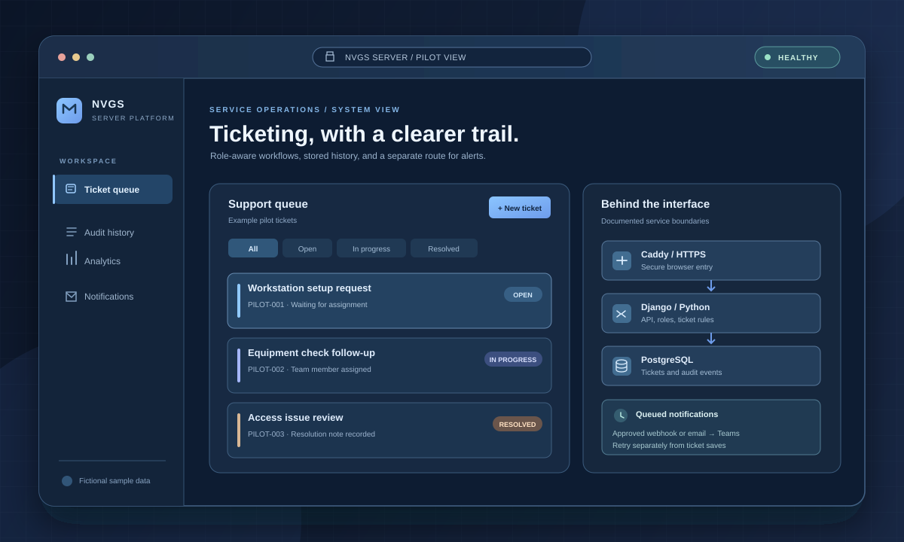

BUILT PROJECT / INTERNAL PLATFORM
NVGS Ticketing System
A Django and PostgreSQL platform that moves a support ticket workflow toward a maintainable server, with a browser dashboard, role-aware API, audit history, and isolated notification delivery.
- ROLE
- Application, integration, and operations development
- STACK
- Python, Django, PostgreSQL, Docker, Caddy, JavaScript
- CONNECTIONS
- Apps Script login bridge; optional webhook or email → Power Automate → Teams
- STATUS
- Fake-data workflow pilot completed; rollout steps remain

The problem
The earlier Apps Script ticketing workflow established how support requests should be created, assigned, updated, and resolved. Moving that workflow to a dedicated server raised a broader engineering problem: preserve the familiar ticket process while adding dependable permissions, audit history, database storage, deployment steps, and a safe path for existing notifications.
What I built
- A Django ticketing dashboard and REST API for intake, assignment, status transitions, comments, escalation, analytics, filtered CSV export, and bulk Team actions.
- Role-filtered access for agents, the Tech Team, and system administrators. Agents see their own requests; internal notes and administration stay behind server-side checks.
- PostgreSQL ticket storage with per-ticket audit events, repeatable import tooling for earlier Apps Script exports, and a Docker Compose setup fronted by Caddy HTTPS.
- A separate notification worker that queues ticket events and can deliver through an approved HTTPS webhook or the existing email → Power Automate → Teams route.
- Deployment, pilot, backup, restore-verification, and recovery procedures in the public repository.
How the pieces connect
Browser → Caddy → Django → PostgreSQL. Caddy is the HTTPS entry point. Django handles sessions, permissions, workflow rules, and API responses. PostgreSQL stays on a private Docker network rather than exposing database credentials or a database port to user laptops.
Ticket save → notification queue → approved delivery route. The ticket is saved first. A separate worker retries failed deliveries, so an email or Teams outage does not prevent ticket creation. The compatible GRTKT_EVENT payload lets an approved Power Automate flow continue parsing and posting updates.
Optional Apps Script login bridge. A short-lived signed assertion can carry a verified Workspace email into Django. That bridge is implemented but disabled by default; official corporate SSO requires separate approval.
Engineering evidence
The public repository includes the application source and Compose configuration ↗, a fake-data pilot checklist ↗, API and permission notes ↗, and notification setup and retry instructions ↗. Django and companion JavaScript tests are included. The repo documents a backup-before-update command and an isolated restore-verification helper; a real backup still needs a saved PASS report.
Operating procedure
- Start with a controlled pilot
Deploy from versioned source, use generated fake users and tickets, and check the health endpoint before inviting approved clients.
- Check each role
Confirm an agent sees only their requests while Team users can assign, transition, resolve, and escalate. Verify internal notes and administration stay restricted.
- Enable one approved alert route
Keep alerts disabled until the webhook, SMTP account, or signed Apps Script bridge is approved. Send a fake event, inspect the worker log, and confirm the Teams result.
- Protect the data before migration
Take a database backup, run isolated restore verification, then import earlier records only after pilot acceptance. Keep secrets and production exports out of GitHub.
- Document the handoff
Record the LAN address, certificate checks, pilot results, remaining approvals, and recovery steps so another maintainer can repeat the deployment.
Outcome and current limits
The project team reported the fake-account Agent, Tech Team, TL, and Manager workflow pilot complete. The code and setup paths are public and reviewable. Real ticket import is intentionally waiting; notification delivery still needs an approved deployment route, and stable LAN naming plus client HTTPS checks require rollout work. I do not claim a production launch, a currently running server, or a measured reduction in ticket time from this evidence.
Read the production-readiness record ↗